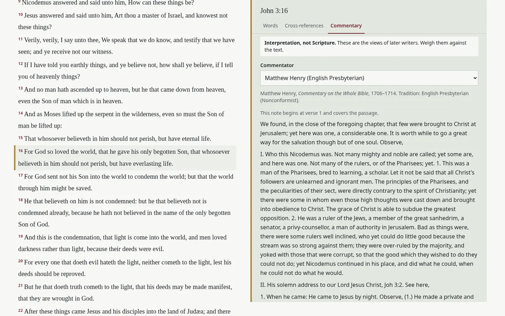

Bible study companion
An offline Bible study companion that runs entirely on my PC, with no account. Search by meaning, Greek and Hebrew word lookup, cross-references and commentaries.

What it is
A Bible study app that works offline. It has the KJV, BSB, WEB and ASV built in, with the ESV to follow once Crossway approves API access. You can search by meaning as well as by words, look up the Greek and Hebrew behind a verse, follow OpenBible cross-references, and read public-domain commentaries from Matthew Henry, John Gill, Jamieson-Fausset-Brown and the Church Fathers.
Why I built it
I wanted one place to read, search and study without an account, adverts or tracking. Commentaries help with understanding, so they're included, but every one is clearly labelled “Interpretation, not Scripture”.
Screenshots
How it's built
Vue 3, TypeScript, Vite and Tailwind. A setup script downloads the public sources and builds the data on your own machine.
How to run it
Needs Node 22 or later. The repo is private, so cloning is by invitation.
git clonethe repo (by invitation)npm installnpm run setup(downloads and builds the Bible data)npm run buildnpm run preview
Status and limits
Runs on my PC for personal study. The ESV needs your own Crossway API key, entered in the app's settings. Search by meaning covers the KJV. The repo is private.
Links
Private repo, demo on request. Get in touch.